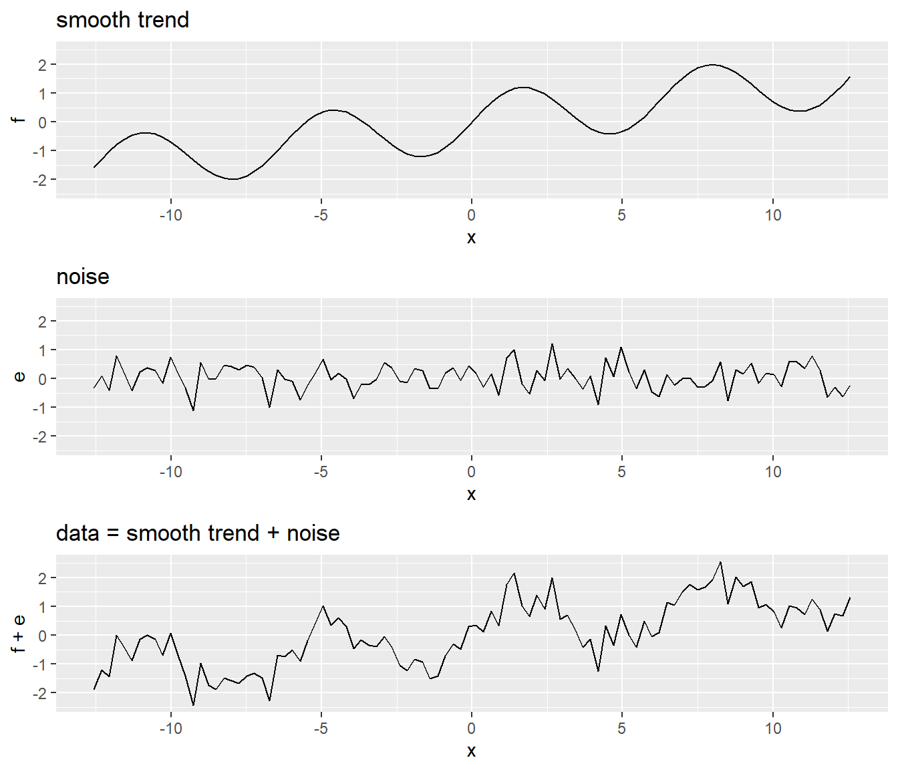
Smoothing
Keywords
Machine Learning
Smoothing
Before continuing learning about machine learning algorithms, we introduce the important concept of smoothing.
Smoothing is a very powerful technique used all across data analysis.
Other names given to this technique are curve fitting and low pass filtering.
It is designed to detect trends in the presence of noisy data in cases in which the shape of the trend is unknown.
Smoothing
The smoothing name comes from the fact that to accomplish this feat, we assume that the trend is smooth, as in a smooth surface.
In contrast, the noise, or deviation from the trend, is unpredictably wobbly:
Smoothing
Smoothing
- Part of what we explain in this section are the assumptions that permit us to extract the trend from the noise.
Example: Is it a 2 or a 7?
To motivate the need for smoothing and make the connection with machine learning, we will construct a simplified version of the MNIST dataset with just two classes for the outcome and two predictors.
Specifically, we define the challenge as building an algorithm that can determine if a digit is a 2 or 7 from the proportion of dark pixels in the upper left quadrant (\(X_1\)) and the lower right quadrant (\(X_2\)).
We also selected a random sample of 1,000 digits, 500 in the training set and 500 in the test set.
Example: Is it a 2 or a 7?
We provide this dataset in the mnist_27 object in the
dslabspackage.For the training data, we have \(n=500\) observed outcomes \(y_1,\dots,y_n\), with \(Y\) defined as \(1\) if the digit is 7 and 0 if it’s 2, and \(n=500\) features \(\mathbf{x}_1, \dots, \mathbf{x}_n\), with each feature a two-dimensional point \(\mathbf{x}_i = (x_{i,1}, x_{i,2})^\top\).
Here is a plot of the \(x_2\)s versus the \(x_1\)s with color determining if \(y\) is 1 (blue) or 0 (red):
library(caret)
library(dslabs)
mnist_27$train |> ggplot(aes(x_1, x_2, color = y)) + geom_point() Example: Is it a 2 or a 7?
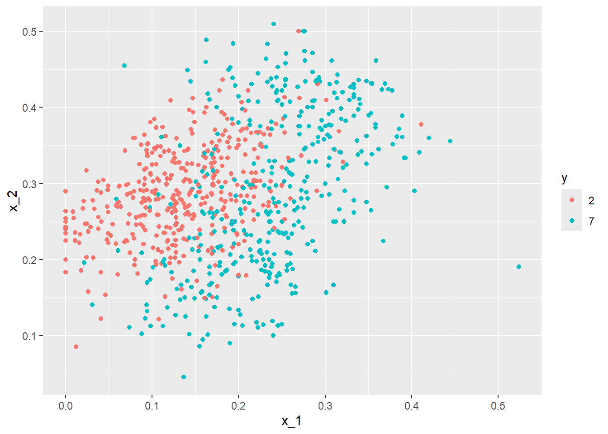
Example: Is it a 2 or a 7?
We can immediately see some patterns.
For example, if \(x_1\) (the upper left panel) is very large, then the digit is probably a 7.
Also, for smaller values of \(x_1\), the 2s appear to be in the mid range values of \(x_2\).
To illustrate how to interpret \(x_1\) and \(x_2\), we include four example images.
Example: Is it a 2 or a 7?
- On the left are the original images of the two digits with the largest and smallest values for \(x_1\) and on the right we have the images corresponding to the largest and smallest values of \(x_2\):
Example: Is it a 2 or a 7?
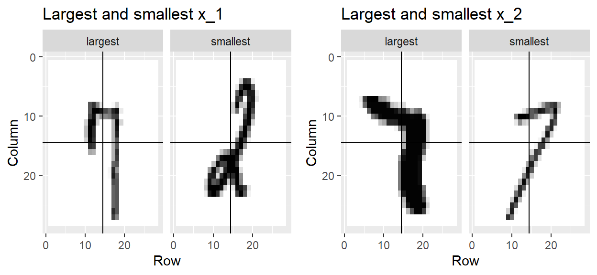
Example: Is it a 2 or a 7?
We can start getting a sense for why these predictors are useful, but also why the problem will be somewhat challenging.
We haven’t really learned any algorithms yet, so let’s try building an algorithm using multivariable regression.
The model is simply:
\[ \begin{aligned} p(\mathbf{x}) &= \mbox{Pr}(Y=1 \mid \mathbf{X}=\mathbf{x}) = \mbox{Pr}(Y=1 \mid X_1=x_1 , X_2 = x_2)\\ &= \beta_0 + \beta_1 x_1 + \beta_2 x_2 \end{aligned} \]
Example: Is it a 2 or a 7?
We fit can fit this model using least squares and obtain an estimate \(\hat{p}(\mathbf{x})\) by using the least square estimates \(\hat{\beta}_0\), \(\hat{\beta}_1\) and \(\hat{\beta}_2\).
We define a decision rule by predicting \(\hat{y}=1\) if \(\hat{p}(\mathbf{x})>0.5\) and 0 otherwise.
We get an accuracy of 0.775, well above 50%.
Not bad for our first try.
Example: Is it a 2 or a 7?
But can we do better?
Because we constructed the
mnist_27example and we had at our disposal 60,000 digits in just the MNIST dataset, we used this to build the true conditional distribution \(p(\mathbf{x})\).Keep in mind that in practice we don’t have access to the true conditional distribution.
We include it in this educational example because it permits the comparison of \(\hat{p}(\mathbf{x})\) to the true \(p(\mathbf{x})\).
Example: Is it a 2 or a 7?
This comparison teaches us the limitations of different algorithms.
We have stored the true \(p(\mathbf{x})\) in the
mnist_27and can plot it as an image.We draw a curve that separates pairs \((\mathbf{x})\) for which \(p(\mathbf{x}) > 0.5\) and pairs for which \(p(\mathbf{x}) < 0.5\):
Example: Is it a 2 or a 7?
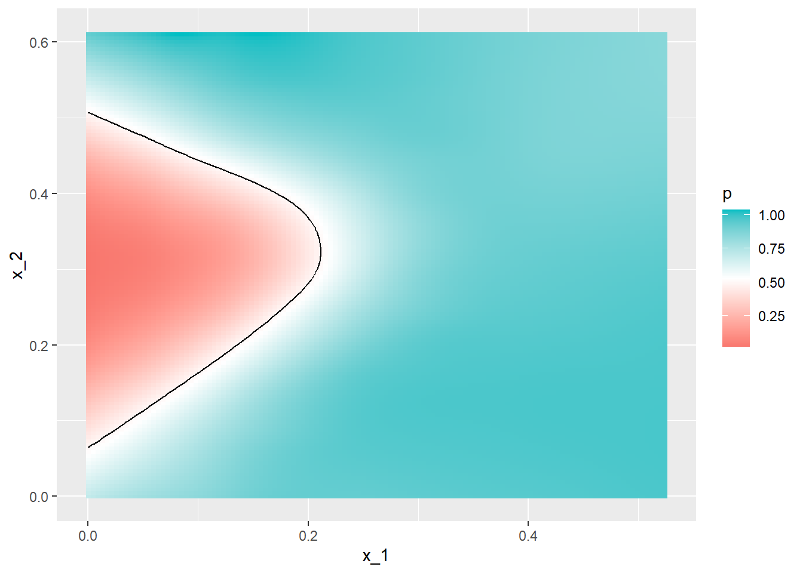
Example: Is it a 2 or a 7?
To start understanding the limitations of regression, first note that with regression \(\hat{p}(\mathbf{x})\) has to be a plane, and as a result the boundary defined by the decision rule is given by:
\(\hat{p}(\mathbf{x}) = 0.5\):
\[ \begin{aligned} \hat{\beta}_0 + \hat{\beta}_1 x_1 + \hat{\beta}_2 x_2 = 0.5 \implies \\ \hat{\beta}_0 + \hat{\beta}_1 x_1 + \hat{\beta}_2 x_2 = 0.5 \implies \\ x_2 = (0.5-\hat{\beta}_0)/\hat{\beta}_2 -\hat{\beta}_1/\hat{\beta}_2 x_1 \end{aligned} \]
Example: Is it a 2 or a 7?
- This implies that for the boundary, \(x_2\) is a linear function of \(x_1\), which suggests that our regression approach has no chance of capturing the non-linear nature of the true \(p(\mathbf{x})\).
Example: Is it a 2 or a 7?
- Visual representation of \(\hat{p}(\mathbf{x})\):
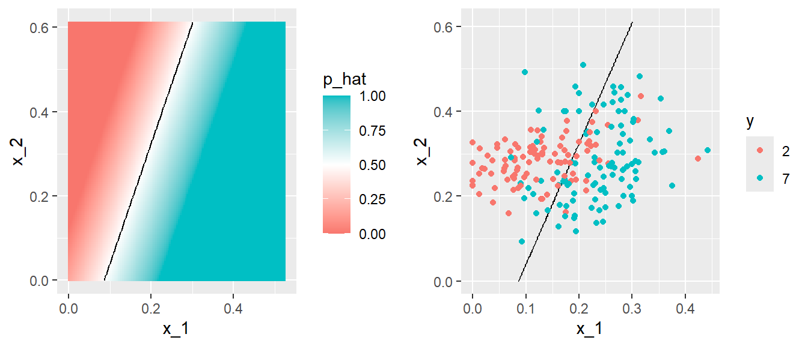
Example: Is it a 2 or a 7?
We need something more flexible: a method that permits estimates with shapes other than a plane.
Smoothing techniques permit this flexibility.
We will start by describing nearest neighbor and kernel approaches.
To understand why we cover this topic, remember that the concepts behind smoothing techniques are extremely useful in machine learning because conditional expectations/probabilities can be thought of as trends of unknown shapes that we need to estimate in the presence of uncertainty.
Signal plus noise model
To explain these concepts, we will focus first on a problem with just one predictor.
Specifically, we try to estimate the time trend in the 2008 US popular vote poll margin (the difference between Obama and McCain).
Later we will learn about methods, such as k-nearest neighbors, that can be used to smooth with higher dimensions.
polls_2008 |> ggplot(aes(day, margin)) + geom_point() Signal plus noise model
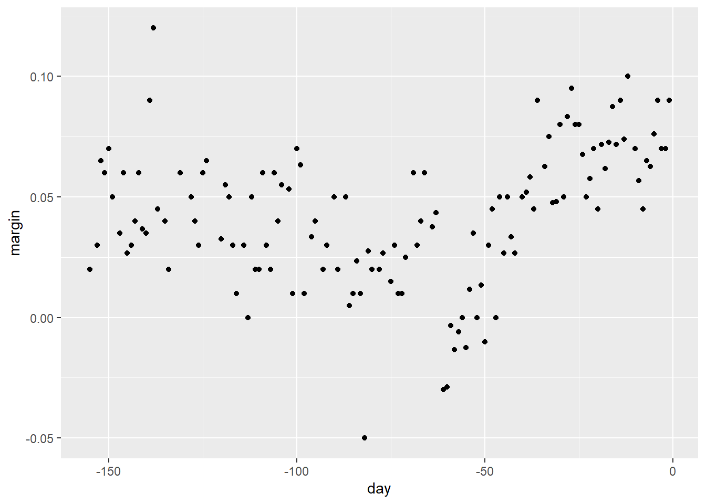
Signal plus noise model
For the purposes of the popular vote example, do not think of it as a forecasting problem.
Instead, we are simply interested in learning the shape of the trend after the election is over.
We assume that for any given day \(x\), there is a true preference among the electorate \(f(x)\), but due to the uncertainty introduced by the polling, each data point comes with an error \(\varepsilon\).
Signal plus noise model
- A mathematical model for the observed poll margin \(Y_i\) is:
\[ Y_i = f(x_i) + \varepsilon_i \]
Signal plus noise model
To think of this as a machine learning problem, consider that we want to predict \(Y\) given a day \(x\).
If we knew the conditional expectation \(f(x) = \mbox{E}(Y \mid X=x)\), we would use it.
But since we don’t know this conditional expectation, we have to estimate it.
Let’s use regression, since it is the only method we have learned up to now.
Signal plus noise model
`geom_smooth()` using formula = 'y ~ x'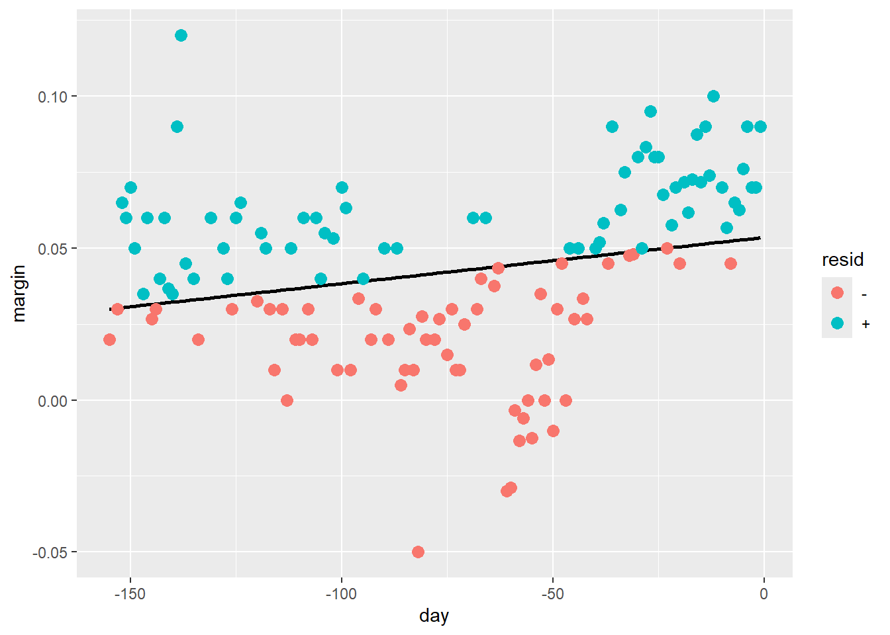
Signal plus noise model
The fitted regression line does not appear to describe the trend very well.
For example, on September 4 (day -62), the Republican Convention was held and the data suggest that it gave John McCain a boost in the polls.
However, the regression line does not capture this potential trend.
To see the lack of fit more clearly, we note that points above the fitted line (blue) and those below (red) are not evenly distributed across days.
Signal plus noise model
- We therefore need an alternative, more flexible approach.
Bin smoothing
The general idea of smoothing is to group data points into strata in which the value of \(f(x)\) can be assumed to be constant.
We can make this assumption when we think \(f(x)\) changes slowly and, as a result, \(f(x)\) is almost constant in small windows of \(x\).
An example of this idea for the
poll_2008data is to assume that public opinion remained approximately the same within a week’s time.With this assumption in place, we have several data points with the same expected value.
Bin smoothing
If we fix a day to be in the center of our week, call it \(x_0\), then for any other day \(x\) such that \(|x - x_0| \leq 3.5\), we assume \(f(x)\) is a constant \(f(x) = \mu\).
This assumption implies that:
\[ E[Y_i | X_i = x_i ] \approx \mu \mbox{ if } |x_i - x_0| \leq 3.5 \]
- In smoothing, we call the size of the interval satisfying \(|x_i - x_0| \leq 3.5\) the window size, bandwidth or span.
Bin smoothing
Later we will see that we try to optimize this parameter.
This assumption implies that a good estimate for \(f(x_0)\) is the average of the \(Y_i\) values in the window.
If we define \(A_0\) as the set of indexes \(i\) such that \(|x_i - x_0| \leq 3.5\) and \(N_0\) as the number of indexes in \(A_0\), then our estimate is:
\[ \hat{f}(x_0) = \frac{1}{N_0} \sum_{i \in A_0} Y_i \]
Bin smoothing
We make this calculation with each value of \(x\) as the center.
In the poll example, for each day, we would compute the average of the values within a week with that day in the center.
Here are two examples: \(x_0 = -125\) and \(x_0 = -55\).
The blue segment represents the resulting average.
Bin smoothing
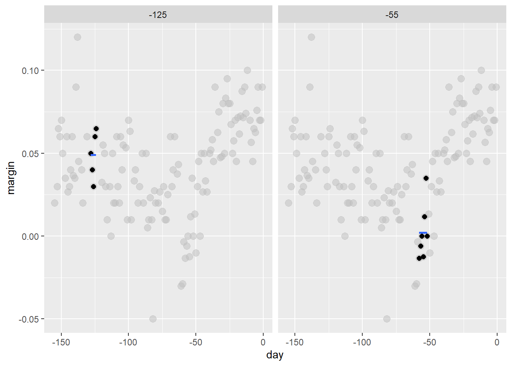
Bin smoothing
By computing this mean for every point, we form an estimate of the underlying curve \(f(x)\).
Below we show the procedure happening as we move from the -155 up to 0.
Bin smoothing
- At each value of \(x_0\), we keep the estimate \(\hat{f}(x_0)\) and move on to the next point:

Bin smoothing
- The final code and resulting estimate look like this:
span <- 7
fit <- with(polls_2008, ksmooth(day, margin, kernel = "box", bandwidth = span))
polls_2008 |> mutate(fit = fit$y) |>
ggplot(aes(x = day)) +
geom_point(aes(y = margin), size = 3, alpha = .5, color = "grey") +
geom_line(aes(y = fit), color = "red") Bin smoothing
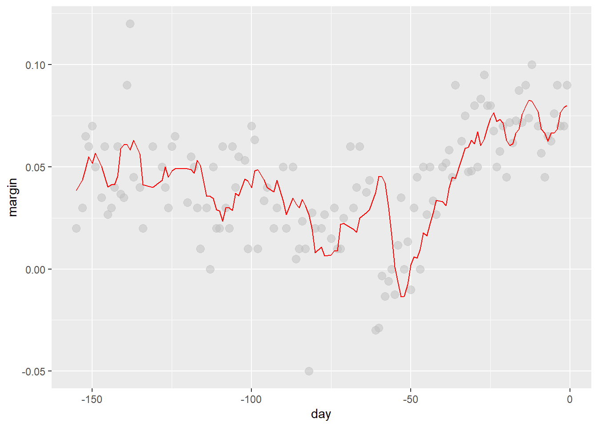
Kernels
The final result from the bin smoother is quite wiggly.
One reason for this is that each time the window moves, two points change.
We can attenuate this somewhat by taking weighted averages that give the center point more weight than far away points, with the two points at the edges receiving very little weight.
Kernels
- You can think of the bin smoother approach as a weighted average:
\[ \hat{f}(x_0) = \sum_{i=1}^N w_0(x_i) Y_i \]
Kernels
in which each point receives a weight of either \(0\) or \(1/N_0\), with \(N_0\) the number of points in the week.
In the code above, we used the argument
kernel="box"in our call to the functionksmooth.This is because the weight function looks like a box.
The
ksmoothfunction provides a “smoother” option which uses the normal density to assign weights.
Kernels
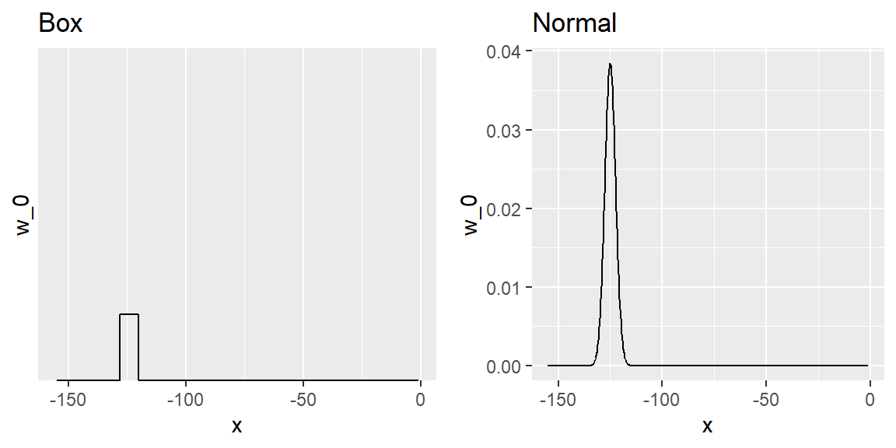
Kernels
- The final code and resulting plot for the normal kernel look like this:
span <- 7
fit <- with(polls_2008, ksmooth(day, margin, kernel = "normal", bandwidth = span))
polls_2008 |> mutate(smooth = fit$y) |>
ggplot(aes(day, margin)) +
geom_point(size = 3, alpha = .5, color = "grey") +
geom_line(aes(day, smooth), color = "red") Kernels
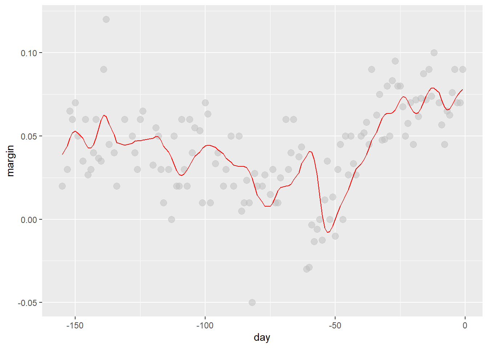
Kernels
Notice that this version looks smoother.
There are several functions in R that implement bin smoothers.
One example is
ksmooth, shown above.In practice, however, we typically prefer methods that use slightly more complex models than fitting a constant.
The final result above, for example, is still somewhat wiggly in parts we don’t expect it to be (between -125 and -75, for example).
Kernels
- Methods such as
loess, which we explain next, improve on this.
Local weighted regression
A limitation of the bin smoother approach just described is that we need small windows for the approximately constant assumptions to hold.
As a result, we end up with a small number of data points to average and obtain imprecise estimates \(\hat{f}(x)\).
Here we describe how local weighted regression (loess) permits us to consider larger window sizes.
To do this, we will use a mathematical result, referred to as Taylor’s theorem, which tells us that if you look closely enough at any smooth function \(f(x)\), it will look like a line.
Local weighted regression
- To see why this makes sense, consider the curved edges gardeners make using straight-edged spades:

Local weighted regression
Instead of assuming the function is approximately constant in a window, we assume the function is locally linear.
We can consider larger window sizes with the linear assumption than with a constant.
Instead of the one-week window, we consider a larger one in which the trend is approximately linear.
We start with a three-week window and later consider and evaluate other options:
Local weighted regression
\[ E[Y_i | X_i = x_i ] = \beta_0 + \beta_1 (x_i-x_0) \mbox{ if } |x_i - x_0| \leq 21 \]
For every point \(x_0\), loess defines a window and fits a line within that window.
Here is an example showing the fits for \(x_0=-125\) and \(x_0 = -55\):
Local weighted regression
`geom_smooth()` using formula = 'y ~ x'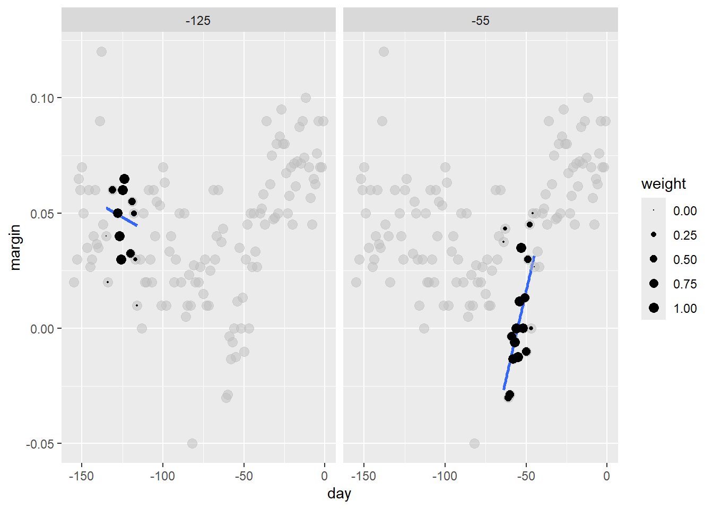
Local weighted regression
- The fitted value at \(x_0\) becomes our estimate \(\hat{f}(x_0)\).
Local weighted regression

Local weighted regression
- The final result is a smoother fit than the bin smoother since we use larger sample sizes to estimate our local parameters:
total_days <- diff(range(polls_2008$day))
span <- 21/total_days
fit <- loess(margin ~ day, degree = 1, span = span, data = polls_2008)
polls_2008 |> mutate(smooth = fit$fitted) |>
ggplot(aes(day, margin)) +
geom_point(size = 3, alpha = .5, color = "grey") +
geom_line(aes(day, smooth), color = "red") Local weighted regression
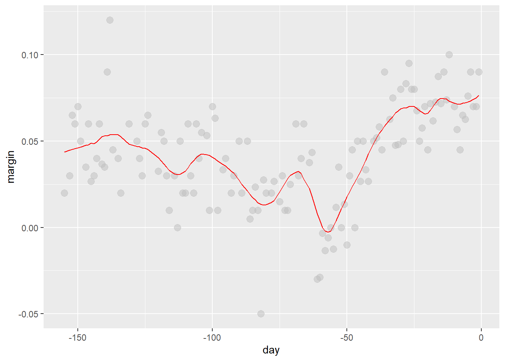
Local weighted regression
Different spans give us different estimates.
We can see how different window sizes lead to different estimates:
Local weighted regression

Local weighted regression
- Here are the final estimates:
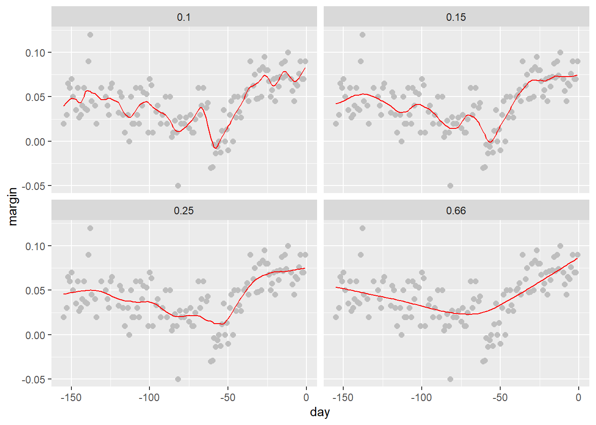
Local weighted regression
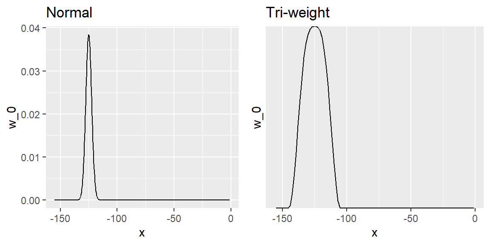
Local weighted regression
3.
loesshas the option of fitting the local model robustly.An iterative algorithm is implemented in which, after fitting a model in one iteration, outliers are detected and down-weighted for the next iteration.
To use this option, we use the argument
family="symmetric".
Fitting parabolas
Taylor’s theorem also tells us that if you look at any mathematical function closely enough, it looks like a parabola.
The theorem also states that you don’t have to look as closely when approximating with parabolas as you do when approximating with lines.
This means we can make our windows even larger and fit parabolas instead of lines.
\[ E[Y_i | X_i = x_i ] = \beta_0 + \beta_1 (x_i-x_0) + \beta_2 (x_i-x_0)^2 \mbox{ if } |x_i - x_0| \leq h \]
Fitting parabolas
You may have noticed that when we showed the code for using loess, we set
degree = 1.This tells loess to fit polynomials of degree 1, a fancy name for lines.
If you read the help page for loess, you will see that the argument
degreedefaults to 2.By default, loess fits parabolas not lines.
Here is a comparison of the fitting lines (red dashed) and fitting parabolas (orange solid):
total_days <- diff(range(polls_2008$day))
span <- 28/total_days
fit_1 <- loess(margin ~ day, degree = 1, span = span, data = polls_2008)
fit_2 <- loess(margin ~ day, span = span, data = polls_2008)
polls_2008 |> mutate(smooth_1 = fit_1$fitted, smooth_2 = fit_2$fitted) |>
ggplot(aes(day, margin)) +
geom_point(size = 3, alpha = .5, color = "grey") +
geom_line(aes(day, smooth_1), color = "red", lty = 2) +
geom_line(aes(day, smooth_2), color = "orange", lty = 1) Fitting parabolas
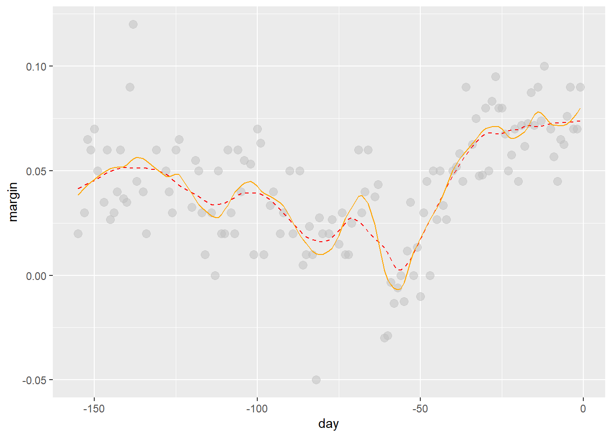
Fitting parabolas
The
degree = 2gives us more wiggly results.In general, we actually prefer
degree = 1as it is less prone to this kind of noise.
Beware of default
ggplotuses loess in itsgeom_smoothfunction:
polls_2008 |> ggplot(aes(day, margin)) +
geom_point() +
geom_smooth(method = loess) Beware of default
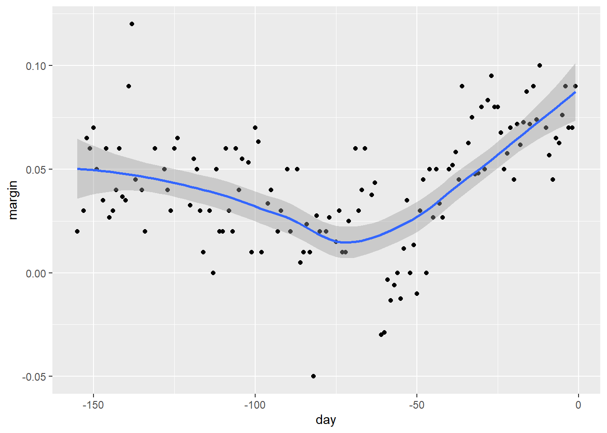
Beware of default
But be careful with default parameters as they are rarely optimal.
However, you can conveniently change them:
polls_2008 |> ggplot(aes(day, margin)) +
geom_point() +
geom_smooth(method = loess, method.args = list(span = 0.15, degree = 1)) Beware of default
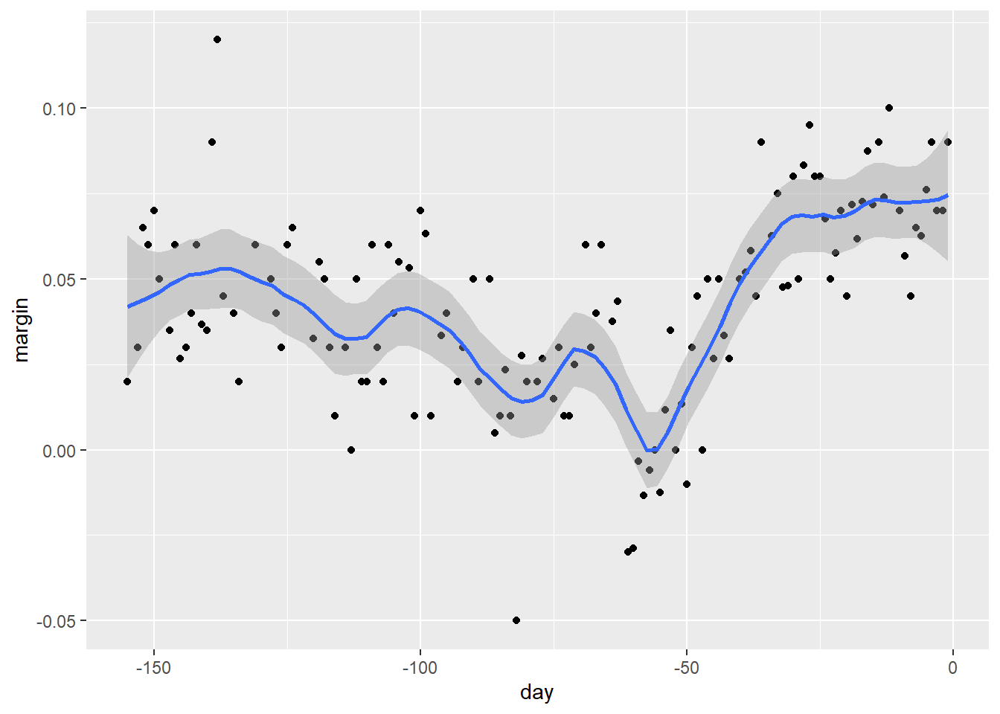
Beware of default
Connecting smoothing to machine learning
To see how smoothing relates to machine learning with a concrete example, consider again our two or seven example.
If we define the outcome \(Y = 1\) for digits that are seven and \(Y=0\) for digits that are 2, then we are interested in estimating the conditional probability:
\[ p(\mathbf{x}) = \mbox{Pr}(Y=1 \mid X_1=x_1 , X_2 = x_2). \]
Connecting smoothing to machine learning
In this example, the 0s and 1s we observe are “noisy” because for some regions the probabilities \(p(\mathbf{x})\) are not that close to 0 or 1.
We therefore need to estimate \(p(\mathbf{x})\).
Smoothing is an alternative to accomplishing this.
We saw that linear regression was not flexible enough to capture the non-linear nature of \(p(\mathbf{x})\), thus smoothing approaches provide an improvement.
Connecting smoothing to machine learning
- We later describe a popular machine learning algorithm, k-nearest neighbors, which is based on the concept of smoothing.